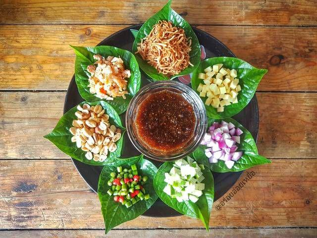
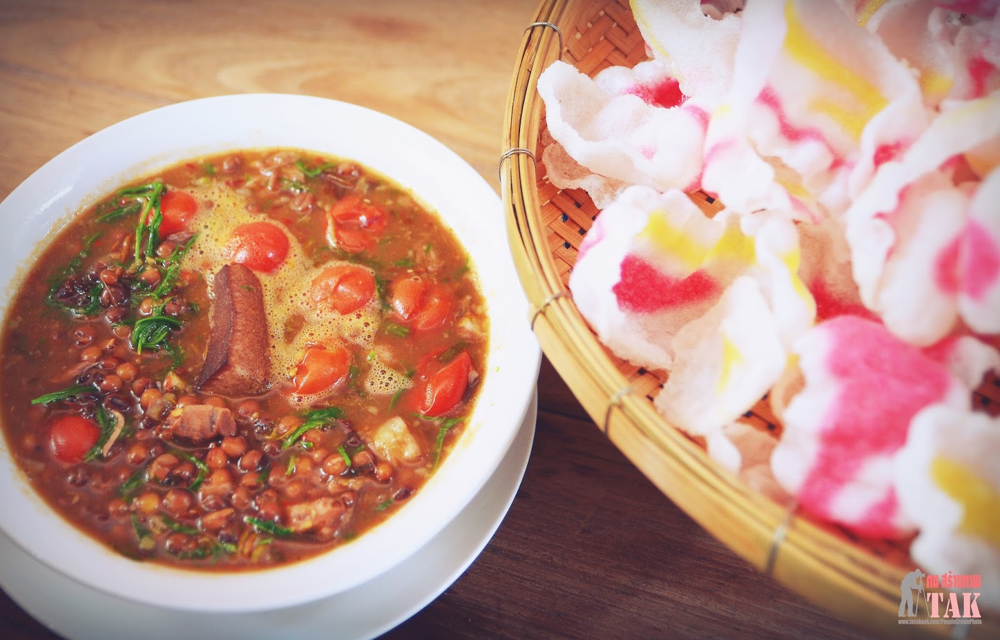
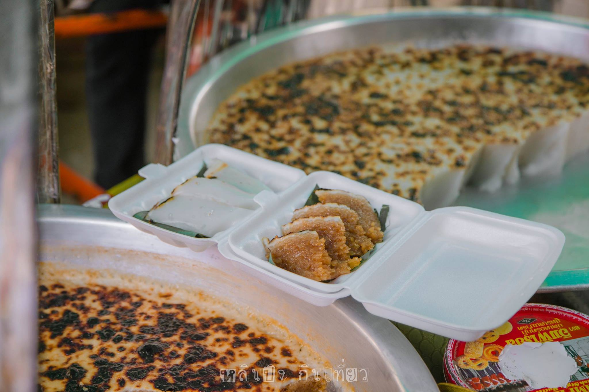

เสน่ห์เมืองตาก
เมี่ยงจอมพล

เมี่ยงจอมพล หรืออีกชื่อ เมี่ยงเต้าเจี้ยวเป็นอาหารว่างโบราณที่ผสมผสานรสชาติของความต่างทางวัฒนธรรมอย่างกลมกล่อม นอกจากจะใช้ใบชะพลู หรือในภาษาท้องถิ่นเรียกว่า “ใบปูลิง” ที่นำไว้ห่อเครื่องเคียงนานาชนิดแล้ว จุดเด่นอีกอย่างที่ใช้ห่อแทนใบชะพลูได้คือ “ข้าวเกรียบงาดำ” หรือ “ข้าวแคบงาดำ” ที่หากินได้เฉพาะในจังหวัดตากเท่านั้น
ส่วนประกอบ คือ มะพร้าวขูด ข้าวตากแห้งทอด ถั่วลิสงคั่ว กุ้งแห้ง มะนาว หอมแดง ขิง กระเทียม พริกขี้หนู ตะไคร้ มะเขือพวงและเต้าเจี้ยวเมืองตาก(ซึ่งเต้าเจี้ยวเมืองตากของเรานั้นได้มีวิธีการหมักที่พิเศษเฉพาะเมืองตากเท่านั้น)
แกงมะแฮะ

ถั่วมะแฮะ เป็นไม้พุ่มสูงประมาณ 1.5-2 เมตร แก่เป็นสีแดงอมม่วง เมล็ดค่อนข้างกลม ฝักสดรสฝาด เป็นไม้เขตร้อน
ใช้ถั่วมะแฮะต้มให้เปื่อยแล้วใช้พริกแกงส้มผสมปลาย่าง ใส่หม้อต้มรวม ใส่น้ำปลา น้ำมะขามเปียก ใบชะอม กินกับข้าวเกรียบทอดหรือย่าง
ฮาละหว่า

ขนมอาละหว่า ขนมอาละหว่าเป็นชื่อขนมพื้นเมืองไทยใหญ่ชนิดหนึ่งที่ทำมาจากแป้งข้าวเจ้าผสม กะทิและน้ำตาลอ้อย ถือเป็นขนมพื้นเมืองที่ขึ้นชื่อของจังหวัดแม่ฮ่องสอน รสชาติคล้ายขนมหม้อแกง ผสมกับขนมถ้วยบ้านเรา ขายแบบ แบ่งหรือหั่นเป็นชิ้นๆ จากกะละมัง
ส่วนผสม แป้งข้าวเหนียว กะทิ น้ำตาล น้ำอ้อย เกลือ
เส่งเผ่

เส่งเผ่ เป็นชื่อของขนมหวานของ ชาวไทยใหญ่ “เส่งเผ่” มีลักษณะคล้ายขนมข้าวเหนียวแดง ที่ทำจากข้าวเหนียว น้ำอ้อย กะทิ ต่างกันตรงหน้าเส่งเผ่จะราดด้วยหัวกะทิแล้วปิ้ง หรือ อบหน้าจนเกรียม รสชาติหวานมัน ขนมเส่งเผ่ เป็นชื่อขนมหวานของชาวไทยใหญ่ มีลักษณะคล้ายขนมข้าวเหนียวแดง มีรสชาติ หวาน มัน และนำไปปิ้งหน้าแล้วจะมี สีสันสวยงาม และมีกลิ่นหอม